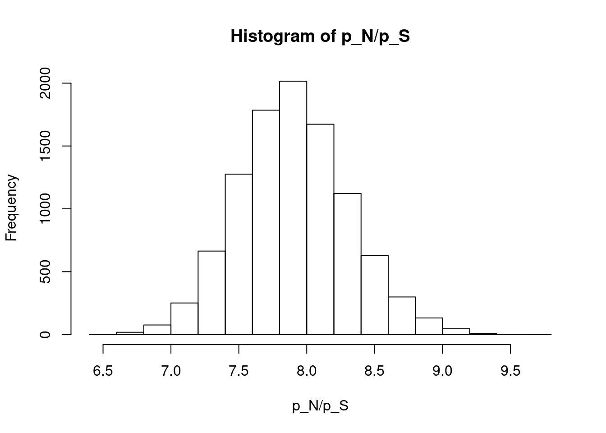
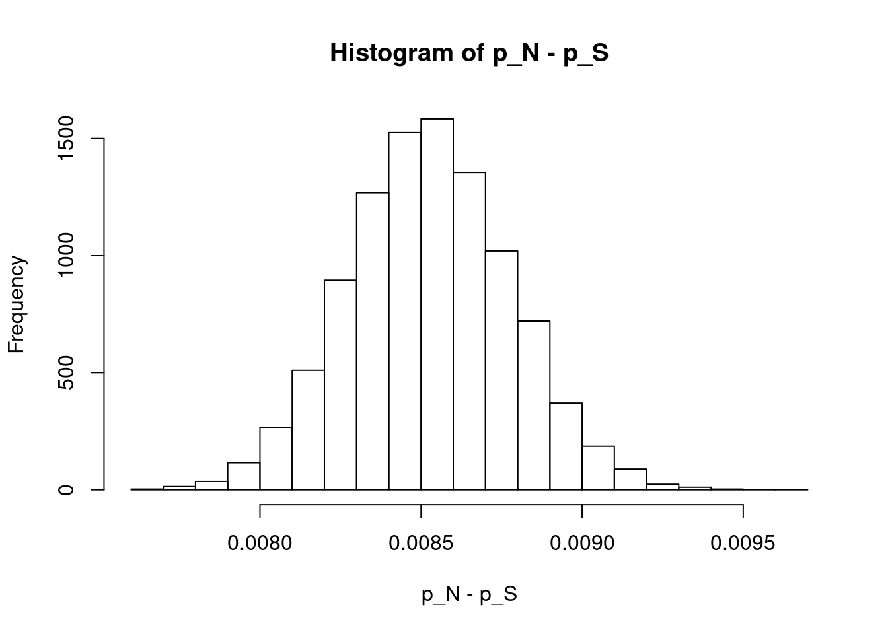
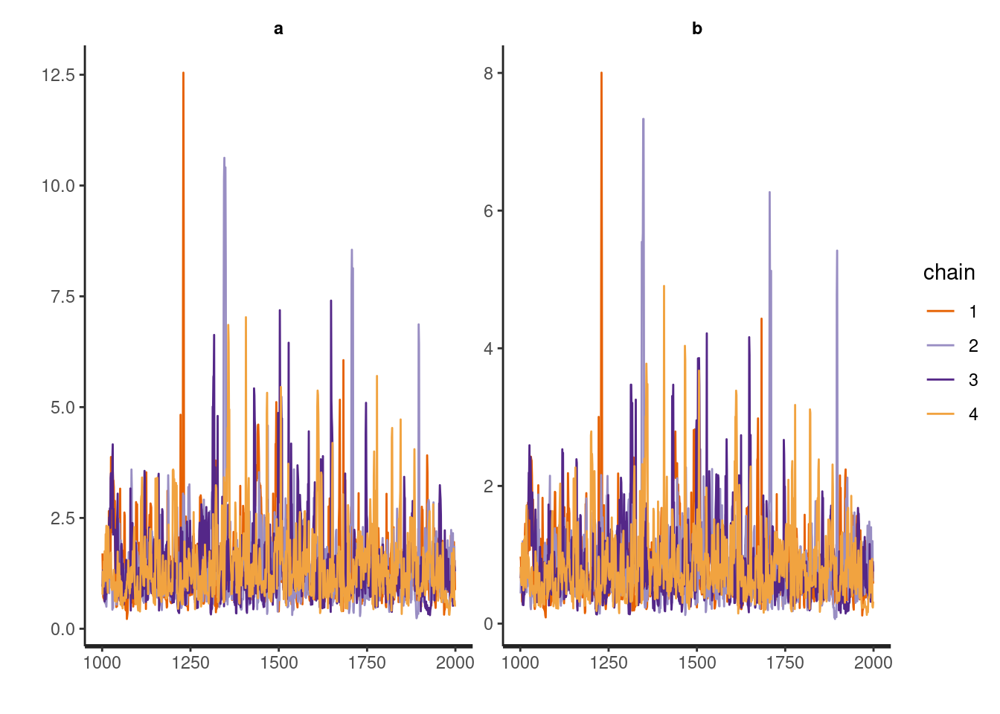
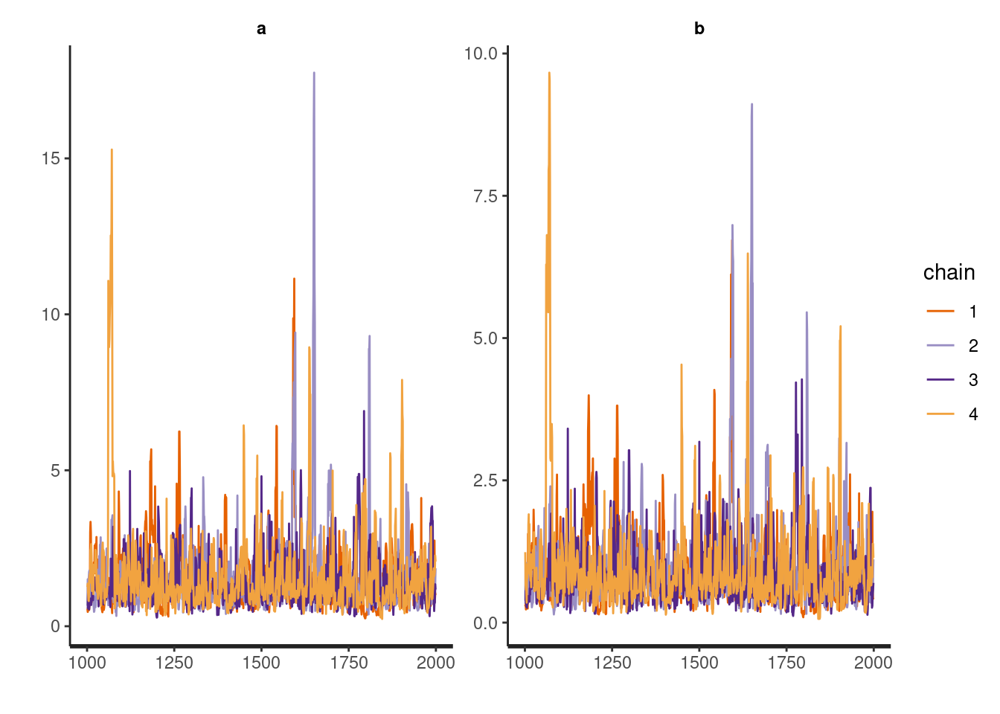

chapter4
s-takano
set.seed(29)library(LearnBayes)4-1
\[ y_1, y_2, \ldots, y_{20} \sim \mathcal{N}(\mu, \sigma^2) \]
データとしては、以下が与えられている．
y = c(9.0, 8.5, 7.0, 8.5, 6.0, 12.5, 6.0, 9.0, 8.5, 7.5, 8.0, 6.0, 9.0, 8.0, 7.0, 10.0, 9.0, 7.5, 5.0, 6.5)
y## [1] 9.0 8.5 7.0 8.5 6.0 12.5 6.0 9.0 8.5 7.5 8.0 6.0 9.0 8.0 7.0 10.0 9.0 7.5 5.0 6.5length(y)## [1] 20無情報事前分布として、\(g(\mu, \sigma^2) \propto \frac{1}{\sigma^2}\) とすると、
\[ \begin{aligned} g(\mu, \sigma^2|y) &\propto \frac{1}{\sigma^2} \prod_{i = 1}^n \mathcal{N}(\mu, \sigma^2) \\ &= \frac{1}{\sigma^2} \prod_{i = 1}^n \frac{1}{\sqrt{2\pi}\sigma} \exp \left( - \frac{1}{2\sigma^2} (y_i - \mu)^2 \right) \\ &\propto \frac{1}{(\sigma^2)^{\frac{n}{2}+1}} \exp \left( \sum_{i = 1}^n - \frac{1}{2\sigma^2} (y_i - \mu)^2 \right) \\ &\propto \frac{1}{(\sigma^2)^{\frac{n}{2}+1}} \exp \left( - \frac{1}{2\sigma^2} \sum_{i = 1}^n (y_i + \bar{y} - \bar{y} - \mu)^2 \right) \\ &\propto \frac{1}{(\sigma^2)^{\frac{n}{2}+1}} \exp \left( - \frac{1}{2\sigma^2} \sum_{i = 1}^n \left( (y_i - \bar{y})^2 +2(y_i - \bar{y})(\bar{y} - \mu) + (\bar{y} - \mu)^2 \right) \right) \\ &\propto \frac{1}{(\sigma^2)^{\frac{n}{2}+1}} \exp \left( - \frac{1}{2\sigma^2} \sum_{i = 1}^n \left( (y_i - \bar{y})^2 \right) + 2n(\bar{y} - \bar{y})(\bar{y} - \mu) + n(\bar{y} - \mu)^2 \right) \\ &\propto \frac{1}{(\sigma^2)^{\frac{n}{2}+1}} \exp \left( - \frac{1}{2\sigma^2} (\sum_{i = 1}^n (y_i - \bar{y})^2 + n(\mu - \bar{y})^2) \right) \end{aligned} \]
となる． ここで、
\[ \begin{aligned} g(\mu|y, \sigma^2) &= \frac{g(\mu, \sigma^2|y)}{g(\sigma^2|y)} \\ &\propto g(\mu, \sigma^2|y) \\ &\propto \frac{1}{(\sigma^2)^{\frac{n}{2}+1}} \exp \left( - \frac{1}{2\sigma^2} (\sum_{i = 1}^n (y_i - \bar{y})^2 + n(\mu - \bar{y})^2) \right) \\ &\propto \exp \left( - \frac{1}{2\sigma^2} (\sum_{i = 1}^n (y_i - \bar{y})^2 + n(\mu - \bar{y})^2) \right) \\ &\propto \exp \left( - \frac{1}{2\sigma^2} n(\mu - \bar{y})^2 \right) \\ &\propto \exp \left( - \frac{1}{2(\frac{\sigma}{\sqrt{n}})^2} (\mu - \bar{y})^2 \right) \\ \end{aligned} \]
である． よって、
\[ g(\mu|y, \sigma^2) = \mathcal{N}(\bar{y}, (\frac{\sigma}{\sqrt{n}})^2) \]
また、
\[ \begin{aligned} g(\sigma^2|y) &= \int g(\mu, \sigma^2|y) d\mu \\ &= \int \frac{1}{(\sigma^2)^{\frac{n}{2}+1}} \exp \left( - \frac{1}{2\sigma^2} (\sum_{i = 1}^n (y_i - \bar{y})^2 + n(\mu - \bar{y})^2) \right) d\mu \\ &= \frac{1}{(\sigma^2)^{\frac{n}{2}+1}} \int \exp \left( - \frac{1}{2\sigma^2} (\sum_{i = 1}^n (y_i - \bar{y})^2 + n(\mu - \bar{y})^2) \right) d\mu \\ &= \frac{1}{(\sigma^2)^{\frac{n}{2}+1}} \exp \left( - \frac{1}{2\sigma^2} \sum_{i = 1}^n (y_i - \bar{y})^2 \right) \int \exp \left( - \frac{1}{2\sigma^2} n(\mu - \bar{y})^2 \right) d\mu \\ &\propto \frac{1}{(\sigma^2)^{\frac{n}{2}+1}} \exp \left( - \frac{1}{2\sigma^2} \sum_{i = 1}^n (y_i - \bar{y})^2 \right) \int \exp \left( - \frac{1}{2(\frac{\sigma}{\sqrt{n}})^2} (\mu - \bar{y})^2 \right) d\mu \\ \end{aligned} \]
ここで、
\[ \int \exp \left( - \frac{1}{2(\frac{\sigma}{\sqrt{n}})^2} (\mu - \bar{y})^2 \right) d\mu \]
は、\(\mathcal{N}(\bar{y}, (\frac{\sigma}{\sqrt{n}})^2)\) の正規化項に相当するので、
\[ \int \exp \left( - \frac{1}{2(\frac{\sigma}{\sqrt{n}})^2} (\mu - \bar{y})^2 \right) d\mu = \sqrt{2\pi(\frac{\sigma}{\sqrt{n}})^2} = \sqrt{\frac{2\pi\sigma^2}{n}} \]
である．
\[ \begin{aligned} g(\sigma^2|y) &\propto \frac{1}{(\sigma^2)^{\frac{n}{2}+1}} \exp \left( - \frac{1}{2\sigma^2} \sum_{i = 1}^n (y_i - \bar{y})^2 \right) \int \exp \left( - \frac{1}{2(\frac{\sigma}{\sqrt{n}})^2} (\mu - \bar{y})^2 \right) d\mu \\ &= \frac{1}{(\sigma^2)^{\frac{n}{2}+1}} \exp \left( - \frac{1}{2\sigma^2} \sum_{i = 1}^n (y_i - \bar{y})^2 \right) \sqrt{\frac{2\pi\sigma^2}{n}} \\ &\propto \frac{\sigma}{(\sigma^2)^{\frac{n}{2}+1}} \exp \left( - \frac{1}{2\sigma^2} \sum_{i = 1}^n (y_i - \bar{y})^2 \right) \\ &= \frac{1}{(\sigma^2)^{\frac{n}{2}+1-\frac{1}{2}}} \exp \left( - \frac{1}{2\sigma^2} \sum_{i = 1}^n (y_i - \bar{y})^2 \right) \\ &= \frac{1}{(\sigma^2)^{\frac{n-1}{2}+1}} \exp \left( - \frac{1}{2\sigma^2} \sum_{i = 1}^n (y_i - \bar{y})^2 \right) \\ &= (\sigma^2)^{-\frac{n-1}{2}-1} \exp \left( - \frac{1}{2\sigma^2} \sum_{i = 1}^n (y_i - \bar{y})^2 \right) \\ &= (\sigma^2)^{-\frac{n-1}{2}-1} \exp \left( - \frac{1}{2\sigma^2} S \right) \\ &= (\sigma^2)^{-\frac{n-1}{2}-1} \exp \left( - \frac{1}{2}\frac{1}{\frac{\sigma^2}{S}} \right) \\ &\propto (\frac{\sigma^2}{S})^{-\frac{n-1}{2}-1} \exp \left( - \frac{1}{2}\frac{1}{\frac{\sigma^2}{S}} \right) \\ \end{aligned} \]
よって、\(\frac{\sigma^2}{S}\) は 逆カイ二乗分布 に従う．
\[ \frac{\sigma^2}{S} \sim InvChiSquare(n-1) \]
(a)
\[ g_{\mu,\sigma^2}(\mu, \sigma^2|y) = g_{\mu|\sigma^2}(\mu|\sigma^2, y)g_{\sigma^2}(\sigma^2|y) \]
であるので、以下のようなアルゴリズムでサンプリングが可能である．
\[ \begin{aligned} \frac{\sigma^2}{S} &\sim InvChiSquare(n-1) \\ \mu &\sim \mathcal{N}(\bar{y}, (\frac{\sigma}{\sqrt{n}})^2) \\ \end{aligned} \]
ここで、\(S = \sum_{i = 1}^n (y_i - \bar{y})^2\) である．
S = sum((y - mean(y))^2)
n = length(y)
sigma2 = S * 1/rchisq(1000, n - 1)
mu = rnorm(1000, mean = mean(y), sd = sqrt(sigma2)/sqrt(n))
plot(mu, sigma2)
(b)
quantile(mu, c(0.05, 0.95))## 5% 95%
## 7.209646 8.615881quantile(sqrt(sigma2), c(0.05, 0.95))## 5% 95%
## 1.344823 2.405518(c)
p_75 = mu + 0.674 * sqrt(sigma2)
mean(p_75)## [1] 9.116239sd(p_75)## [1] 0.47426684-2
独立した標本が2つあり、それぞれ以下のようになっている．
\[ \begin{aligned} x_1, x_2, \ldots, x_m &\sim \mathcal{N}(\mu_1,\sigma_1^2) \\ y_1, y_2, \ldots, y_n &\sim \mathcal{N}(\mu_2,\sigma_2^2) \\ \end{aligned} \]
事前分布を以下とする．
\[ g(\mu_1, \sigma_1^2, \mu_2, \sigma_2^2) \propto \frac{1}{\sigma_1^2\sigma_2^2} \]
(a)
事後密度は以下のように計算できる1．
\[ \begin{aligned} g(\mu_1, \sigma_1^2, \mu_2, \sigma_2^2|x,y) &= \frac{g(\mu_1, \sigma_1^2, \mu_2, \sigma_2^2, x, y)}{g(x, y)} \\ &= \frac{g(x, y|\mu_1, \sigma_1^2, \mu_2, \sigma_2^2)g(\mu_1, \sigma_1^2, \mu_2, \sigma_2^2)}{g(x, y)} \\ &\propto \frac{g(x, y|\mu_1, \sigma_1^2, \mu_2, \sigma_2^2)}{g(x, y)}\frac{1}{\sigma_1^2\sigma_2^2} \\ &\propto g(x|\mu_1, \sigma_1^2, \mu_2, \sigma_2^2) \frac{1}{\sigma_1^2\sigma_2^2} \\ &= g(x|\mu_1, \sigma_1^2)g(y|\mu_2, \sigma_2^2) \frac{1}{\sigma_1^2\sigma_2^2} \\ &= \prod_{i = 1}^m \mathcal{N}(\mu_1, \sigma_1^2) \prod_{i = 1}^n \mathcal{N}(\mu_2, \sigma_2^2) \frac{1}{\sigma_1^2\sigma_2^2} \\ &= \prod_{i = 1}^m \frac{1}{\sqrt{2\pi}\sigma_1} \exp \left( - \frac{1}{2\sigma_1^2} (x_i - \mu_1)^2 \right) \prod_{i = 1}^n \frac{1}{\sqrt{2\pi}\sigma_2} \exp \left( - \frac{1}{2\sigma_2^2} (y_i - \mu_2)^2 \right) \frac{1}{\sigma_1^2\sigma_2^2} \\ &\propto \frac{1}{\sigma_1^m} \exp \left( - \frac{1}{2\sigma_1^2} \sum_{i = 1}^m (x_i - \mu_1)^2 \right) \frac{1}{\sigma_2^n} \exp \left( - \frac{1}{2\sigma_2^2} \sum_{i = 1}^n (y_i - \mu_2)^2 \right) \frac{1}{\sigma_1^2\sigma_2^2} \\ &= \frac{1}{(\sigma_1^2)^{\frac{m}{2} + 1}} \exp \left( - \frac{1}{2\sigma_1^2} \sum_{i = 1}^m (x_i - \mu_1)^2 \right) \frac{1}{(\sigma_2^2)^{\frac{n}{2} + 1}} \exp \left( - \frac{1}{2\sigma_2^2} \sum_{i = 1}^n (y_i - \mu_2)^2 \right) \\ &= \frac{1}{(\sigma_1^2)^{\frac{m}{2} + 1}} \exp \left( - \frac{1}{2\sigma_1^2} \sum_{i = 1}^m (x_i - \bar{x})^2 + m(\mu_1 - \bar{x})^2 \right) \frac{1}{(\sigma_2^2)^{\frac{n}{2} + 1}} \exp \left( - \frac{1}{2\sigma_2^2} \sum_{i = 1}^n (y_i - \bar{y})^2 + n(\mu_2 - \bar{y})^2 \right) \\ &= \frac{1}{(\sigma_1^2)^{\frac{m}{2} + 1}} \exp \left( - \frac{1}{2\sigma_1^2} \sum_{i = 1}^m (x_i - \bar{x})^2 \right) \exp \left( - \frac{1}{2\sigma_1^2} m(\mu_1 - \bar{x})^2 \right) \\ &\times \frac{1}{(\sigma_2^2)^{\frac{n}{2} + 1}} \exp \left( - \frac{1}{2\sigma_2^2} \sum_{i = 1}^n (y_i - \bar{y})^2 \right) \exp \left( - \frac{1}{2\sigma_2^2} n(\mu_2 - \bar{y})^2 \right) \\ &= \frac{1}{(\sigma_1^2)^{\frac{m}{2} + 1}} \exp \left( - \frac{1}{2\sigma_1^2} S_1 \right) \exp \left( - \frac{1}{2\sigma_1^2} m(\mu_1 - \bar{x})^2 \right) \\ &\times \frac{1}{(\sigma_2^2)^{\frac{n}{2} + 1}} \exp \left( - \frac{1}{2\sigma_2^2} S_2 \right) \exp \left( - \frac{1}{2\sigma_2^2} n(\mu_2 - \bar{y})^2 \right) \\ &= \frac{1}{(\sigma_1^2)^{\frac{m}{2} + 1}} \exp \left( - \frac{1}{2\sigma_1^2} S_1 \right) \exp \left( - \frac{1}{2(\frac{\sigma_1}{\sqrt{m}})^2} (\mu_1 - \bar{x})^2 \right) \\ &\times \frac{1}{(\sigma_2^2)^{\frac{n}{2} + 1}} \exp \left( - \frac{1}{2\sigma_2^2} S_2 \right) \exp \left( - \frac{1}{2(\frac{\sigma_1}{\sqrt{n}})^2} (\mu_2 - \bar{y})^2 \right) \\ &= \frac{1}{(\sigma_1^2)^{\frac{m}{2} + 1}} \exp \left( - \frac{1}{2\sigma_1^2} S_1 \right) \mathcal{N}(\bar{x}, (\frac{\sigma_1}{\sqrt{m}})^2) \int \exp \left( - \frac{1}{2(\frac{\sigma_1}{\sqrt{m}})^2} (\mu_1 - \bar{x})^2 \right) d\mu_1 \\ &\times \frac{1}{(\sigma_2^2)^{\frac{n}{2} + 1}} \exp \left( - \frac{1}{2\sigma_2^2} S_2 \right) \mathcal{N}(\bar{y}, (\frac{\sigma_2}{\sqrt{n}})^2) \int \exp \left( - \frac{1}{2(\frac{\sigma_2}{\sqrt{n}})^2} (\mu_2 - \bar{y})^2 \right) d\mu_2 \\ &= \frac{1}{(\sigma_1^2)^{\frac{m}{2} + 1}} \exp \left( - \frac{1}{2\sigma_1^2} S_1 \right) \mathcal{N}(\bar{x}, (\frac{\sigma_1}{\sqrt{m}})^2) \sqrt{\frac{2\pi\sigma_1^2}{m}} \\ &\times \frac{1}{(\sigma_2^2)^{\frac{n}{2} + 1}} \exp \left( - \frac{1}{2\sigma_2^2} S_2 \right) \mathcal{N}(\bar{y}, (\frac{\sigma_2}{\sqrt{n}})^2) \sqrt{\frac{2\pi\sigma_2^2}{n}} \\ &\propto \frac{1}{(\sigma_1^2)^{\frac{m}{2} + 1}} \exp \left( - \frac{1}{2\sigma_1^2} S_1 \right) \mathcal{N}(\bar{x}, (\frac{\sigma_1}{\sqrt{m}})^2) \sigma_1 \\ &\times \frac{1}{(\sigma_2^2)^{\frac{n}{2} + 1}} \exp \left( - \frac{1}{2\sigma_2^2} S_2 \right) \mathcal{N}(\bar{y}, (\frac{\sigma_2}{\sqrt{n}})^2) \sigma_2 \\ &= \frac{1}{(\sigma_1^2)^{\frac{m - 1}{2} + 1}} \exp \left( - \frac{1}{2\sigma_1^2} S_1 \right) \mathcal{N}(\bar{x}, (\frac{\sigma_1}{\sqrt{m}})^2) \\ &\times \frac{1}{(\sigma_2^2)^{\frac{n - 1}{2} + 1}} \exp \left( - \frac{1}{2\sigma_2^2} S_2 \right) \mathcal{N}(\bar{y}, (\frac{\sigma_2}{\sqrt{n}})^2) \\ \end{aligned} \]
このとき、
\[ \begin{aligned} g(\mu_1, \sigma_1^2|x) &= \frac{1}{(\sigma_1^2)^{\frac{m - 1}{2} + 1}} \exp \left( - \frac{1}{2\sigma_1^2} S_1 \right) \mathcal{N}(\bar{x}, (\frac{\sigma_1}{\sqrt{m}})^2) \\ g(\mu_2, \sigma_2^2|y) &= \frac{1}{(\sigma_2^2)^{\frac{n - 1}{2} + 1}} \exp \left( - \frac{1}{2\sigma_2^2} S_2 \right) \mathcal{N}(\bar{y}, (\frac{\sigma_2}{\sqrt{n}})^2) \\ \end{aligned} \]
としたとき、
\[ g(\mu_1, \sigma_1^2, \mu_2, \sigma_2^2|x,y) \propto g(\mu_1, \sigma_1^2|x) g(\mu_2, \sigma_2^2|y) \]
となり、互いに独立した事後分布に従う．
(b)
互いに独立しているので、それぞれの分布からサンプリングすれば良く、次のようになる2．
\[ \begin{aligned} \frac{\sigma_1^2}{S_1} &\sim InvChiSquare(m-1) \\ \mu_1 &\sim \mathcal{N}(\bar{x}, (\frac{\sigma_1}{\sqrt{m}})^2) \\ \frac{\sigma_2^2}{S_2} &\sim InvChiSquare(n-1) \\ \mu_2 &\sim \mathcal{N}(\bar{y}, (\frac{\sigma_2}{\sqrt{m}})^2) \\ \end{aligned} \]
(c)
sample_size = 10000
x = c(120, 107, 110, 116, 114, 111, 113, 117, 114, 112)
S_1 = sum((x - mean(x))^2)
m = length(x)
sigma2_1 = S_1 * 1/rchisq(sample_size, m - 1)
mu_1 = rnorm(sample_size, mean = mean(x), sd = sqrt(sigma2_1)/sqrt(m))
quantile(mu_1, c(0.05, 0.95))## 5% 95%
## 111.2274 115.5527quantile(sqrt(sigma2_1), c(0.05, 0.95))## 5% 95%
## 2.720200 6.059221y = c(110, 111, 107, 108, 110, 105, 107, 106, 111, 111)
S_2 = sum((y - mean(y))^2)
n = length(y)
sigma2_2 = S_2 * 1/rchisq(sample_size, n - 1)
mu_2 = rnorm(sample_size, mean = mean(y), sd = sqrt(sigma2_2)/sqrt(n))
quantile(mu_2, c(0.05, 0.95))## 5% 95%
## 107.2773 109.9402quantile(sqrt(sigma2_2), c(0.05, 0.95))## 5% 95%
## 1.652193 3.732908hist(mu_1 - mu_2)
4-3
\[ \begin{aligned} n_N &= 1601 + 162527 \\ y_N &= 1601 \\ n_S &= 510 + 412368 \\ y_S &= 510 \\ y_N &\perp y_S \\ y_N &\sim Bin(n_N, p_N) \\ y_S &\sim Bin(n_S, p_S) \\ p_N, p_S &\sim Uniform(-\infty, \infty) \\ \end{aligned} \]
(a)
\[ \begin{aligned} p(p_N, p_S|y_N, y_S) &= \frac{p(y_N, y_S|p_N, p_S)p(p_N, p_S)}{p(y_N, y_S)} \\ &= \frac{p(y_N, y_S|p_N, p_S) \cdot 1}{p(y_N, y_S)} \\ &\propto p(y_N, y_S|p_N, p_S) \\ &= p(y_N|p_N)p(y_S|p_S) \\ &\propto p(y_N|p_N)p(y_S|p_S) \\ &\propto p_N^{y_N}(1 - p_N)^{n_N-y_N} p_S^{y_S}(1 - p_S)^{n_S-y_S} \\ &\propto Beta(p_N|y_N+1, n_N-y_N+1)Beta(p_S|y_S+1, n_S-y_S+1) \end{aligned} \]
よって、
\[ \begin{aligned} p_N &\sim Beta(p_N|y_N+1, n_N-y_N+1) \\ p_S &\sim Beta(p_S|y_S+1, n_S-y_S+1) \end{aligned} \]
(b)
n_N = 1601 + 162527
y_N = 1601
n_S = 510 + 412368
y_S = 510
sample_size = 10000
p_N = rbeta(sample_size, y_N + 1, n_N - y_N + 1)
p_S = rbeta(sample_size, y_S + 1, n_S - y_S + 1)(c)
hist(p_N/p_S)
quantile(p_N/p_S, c(0.025, 0.975))## 2.5% 97.5%
## 7.142733 8.736755(d)
hist(p_N - p_S)
(e)
sum((p_N - p_S) > 0) / sample_size## [1] 14-4
(a)
4-1 と同様な計算により、
\[ \begin{aligned} \frac{\sigma^2}{S} &\sim InvChiSquare(n-1) \\ \mu &\sim \mathcal{N}(\bar{y}, (\frac{\sigma}{\sqrt{n}})^2) \\ \end{aligned} \]
sample_size = 1000
y = c(10, 11, 12, 11, 9)
S = sum((y - mean(y))^2)
n = length(y)
sigma2 = S * 1 / rchisq(sample_size, n - 1)
mu = rnorm(sample_size, mean = mean(y), sd = sqrt(sigma2)/sqrt(n))
length(mu)## [1] 1000length(sigma2)## [1] 1000mean(mu)## [1] 10.5626mean(sigma2)## [1] 2.619525(b)
丸められる前の観測値を \(z_n\) とする．
\[ z_1, z_2, \ldots, z_{5} \sim \mathcal{N}(\mu, \sigma^2) \]
このとき、丸められた測定値は以下のように表せる．
\[ y_n \in (z_n - \frac{1}{2}, z_n + \frac{1}{2}) \]
このとき、\(y\) の確率質量関数は、丸められる前の観測値 \(z_n\) を周辺化することで以下のように表せる．
\[ \begin{aligned} p(y_n|\mu, \sigma^2) &= \int_{y_n-\frac{1}{2}}^{y_n+\frac{1}{2}} \mathcal{N}(z_n|\mu, \sigma^2) dz_n \\ &= \Phi(\frac{y_n+\frac{1}{2} - \mu}{\sigma}) - \Phi(\frac{y_n-\frac{1}{2} - \mu}{\sigma}) \end{aligned} \]
ここで、\(\Phi\) は標準正規分布の累積確率分布である． 無情報事前分布として、
\[ p(\mu, \sigma^2) \propto \frac{1}{\sigma^2} \]
とする． よって、事後分布は次のように表せる3．
\[ \begin{aligned} p(\mu, \sigma^2|y) &\propto p(\mathbb{y}|\mu, \sigma^2) p(\mu, \sigma^2) \\ &\propto \prod_{n=1}^{N} p(y_n|\mu, \sigma^2) \frac{1}{\sigma^2} \\ &= \frac{1}{\sigma^2} \prod_{n=1}^{N} \left( \Phi(\frac{y_n+\frac{1}{2} - \mu}{\sigma}) - \Phi(\frac{y_n-\frac{1}{2} - \mu}{\sigma}) \right) \end{aligned} \]
(c)
まず、対数をとった事後分布を導出する．
\[ \begin{aligned} \ln p(\mu, \sigma^2|y) &= \ln \frac{1}{\sigma^2} \prod_{n=1}^{N} \left( \Phi(\frac{y_n+\frac{1}{2} - \mu}{\sigma}) - \Phi(\frac{y_n-\frac{1}{2} - \mu}{\sigma}) \right) \\ &= \sum_{n=1}^{N} \ln \left( \Phi(\frac{y_n+\frac{1}{2} - \mu}{\sigma}) - \Phi(\frac{y_n-\frac{1}{2} - \mu}{\sigma}) \right) - \ln \sigma^2 \end{aligned} \]
y## [1] 10 11 12 11 9上記の結果から、以下のようなグリッドを用意する4．
N = length(y)
p = function (mu, sigma2, y) {
return(
sum(
log(
pnorm((y + 1/2 - mu) / sqrt(sigma2)) - pnorm((y - 1/2 - mu) / sqrt(sigma2))
)
)
-
log(sigma2)
)
}
ng = 50 # num of grids
mu = seq(5, 20, len = ng)
dmu = diff(mu[1:2])
sigma2 = seq(0.1, 5, len = ng)
dsigma2 = diff(sigma2[1:2])
probs = matrix(nrow = ng, ncol = ng)
for (i in 1:ng) {
for (j in 1:ng) {
probs[i, j] = p(mu[i], sigma2[j], y)
}
}
probs = probs - max(probs)
probs = exp(probs)
probs = probs / sum(probs)
marginal_prob = rowSums(probs) # p(mu|y)
sample_size = 1000
mu_sample = c()
sigma2_sample = c()
for (n in 1:sample_size) {
i = sample(1:ng, 1, replace=TRUE, prob = marginal_prob)
mu_sample = c(mu_sample, mu[i] + runif(1) * dmu - dmu / 2)
j = sample(1:ng, 1, replace=TRUE, prob = probs[i,]) # p(sigma^2|mu, y)
sigma2_sample = c(sigma2_sample, sigma2[j] + runif(1) * dsigma2 - dsigma2 / 2)
}
mean(mu_sample)## [1] 10.59278mean(sigma2_sample)## [1] 1.621955LearnBayes を用いてみる．
p = function (theta, data) {
mu = theta[1]
sigma2 = theta[2]
return(
sum(
log(
pnorm((data + 1/2 - mu) / sqrt(sigma2)) - pnorm((y - 1/2 - mu) / sqrt(sigma2))
)
)
-
log(sigma2)
)
}
s = simcontour(p, c(5, 20, 0.1, 5), y, 1000)
mean(s$x)## [1] 10.59801mean(s$y)## [1] 1.648196Stan を用いてみる．
sample = extract(fit)
mean(sample$mu)## [1] 10.5802mean(sample$sigma)## [1] 1.362632(d)
- の結果は以下のようになる．
[1] 10.61258
[1] 2.818481- の結果は以下のようになる．
[1] 10.58333
[1] 1.6153294-5
\[ y_1, \ldots, y_n \sim f(y|a,b) \]
\[ f(y|a,b) = \frac{\Gamma(y + a)}{\Gamma(a)y!}\frac{b^a}{(b + 1)^{y+a}} \quad (a, b > 0) \]
上記の式の導出を試みる． まず、ポアソン分布は以下のようにかける．
\[ Po(y|\lambda) \sim \frac{1}{y!} \lambda^y \exp(-\lambda) \]
次に、ガンマ分布は以下のようにかける．
\[ Gamma(y|a, b) = \frac{b^a}{\Gamma(a)} y^{a-1} \exp(-by) \]
よって、ポアソン・ガンマの混合は次のようにかける．
\[ \begin{aligned} \lambda &\sim Gamma(\lambda|a,b) \\ y &\sim Po(y|\lambda) \end{aligned} \]
\[ \begin{aligned} p(y|a,b) &= \int Po(y|\lambda) Gamma(\lambda|a,b) \; d\lambda \\ &= \int \frac{1}{y!} \lambda^y \exp(-\lambda) \frac{b^a}{\Gamma(a)} \lambda^{a-1} \exp(-b\lambda) \; d\lambda \\ &= \frac{1}{y!} \frac{b^a}{\Gamma(a)} \int \lambda^y \exp(-\lambda) \lambda^{a-1} \exp(-b\lambda) \; d\lambda \\ &= \frac{1}{y!} \frac{b^a}{\Gamma(a)} \int \lambda^{y + a - 1} \exp(-(b+1)\lambda) \; d\lambda \\ &= \frac{1}{y!} \frac{b^a}{\Gamma(a)} \frac{\Gamma(y + a)}{(b + 1)^{(y + a)}} \\ &= \frac{\Gamma(y + a)}{\Gamma(a)y!}\frac{b^a}{(b + 1)^{y+a}} \end{aligned} \]
事前分布を以下とすると、
\[ p(a,b) \propto \frac{1}{(ab)^2} \]
\[ \begin{aligned} p(\theta_1, \theta_2|data) &\propto \frac{1}{ab} \prod_{i=1}^n \frac{\Gamma(y_i + a)}{\Gamma(a) y_i!}\frac{b^a}{(b + 1)^{y_i+a}} \\ a &= \exp(\theta_1), \\ b &= \exp(\theta_2) \end{aligned} \]
y = c(2, 5, 0, 2, 3, 1, 3, 4, 3, 0, 3,
2, 1, 1, 0, 6, 0, 0, 3, 0, 1, 1,
5, 0, 1, 2, 0, 0, 2, 1, 1, 1, 0)
n = length(y)グリッド範囲を決定するため、最尤推定を行う．
\[ \begin{aligned} L(a, b) &= \sum_{i=1}^n \log \frac{\Gamma(y_i + a)}{\Gamma(a) y_i!}\frac{b^a}{(b + 1)^{y_i + a}} \\ &= \sum_{i=1}^n \log \Gamma(y_i + a) - \log \Gamma(a) - \log y_i! + a \log b - (y_i + a)\log (b + 1) \\ \end{aligned} \]
よって、
\[ \begin{aligned} \underset{a,b}{\operatorname{argmax}} {L(a,b)} &= \underset{a,b}{\operatorname{argmax}} {\sum_{i=1}^n \log \Gamma(y_i + a) - \log \Gamma(a) - \log y_i! + a \log b - (y_i + a)\log (b + 1)} \\ &= \underset{a,b}{\operatorname{argmax}} {\sum_{i=1}^n \log \Gamma(y_i + a) - \log \Gamma(a) + a \log b - (y_i + a)\log (b + 1)} \\ \end{aligned} \]
\[ \begin{aligned} \frac{\partial L}{\partial a} &= \frac{\partial}{\partial a} \sum_{i=1}^n \log \Gamma(y_i + a) - \log \Gamma(a) - \log y_i! + a \log b - (y_i + a)\log (b + 1) \\ &= \sum_{i=1}^n \psi(y_i + a) - \psi(a) + \log b - \log (b + 1) \\ \end{aligned} \]
ここで、\(\psi\) はディガンマ関数である．ディガンマ関数の性質5より、
\[ \begin{aligned} \frac{\partial L}{\partial a} &= \sum_{i=1}^n \psi(y_i + a) - \psi(a) + \log b - \log (b + 1) \\ &= \sum_{i=1}^n \sum_{k=1}^{y_i}{\frac{1}{a+k-1}} + \log b - \log (b + 1) \\ &= \sum_{i=1}^n \left( \sum_{k=1}^{y_i}{\frac{1}{a+k-1}} + \log b - \log (b + 1) \right) \\ &= \sum_{i=1}^n \left( \sum_{k=1}^{y_i}{\frac{1}{a+k-1}} \right) + n \log\frac{b}{b+1} \\ \end{aligned} \]
\[ \begin{aligned} \frac{\partial L}{\partial b} &= \frac{\partial}{\partial b} \sum_{i=1}^n \log \Gamma(y_i + a) - \log \Gamma(a) - \log y_i! + a \log b - (y_i + a)\log (b + 1) \\ &= \sum_{i=1}^n a \frac{1}{b} - (y_i + a) \frac{1}{b + 1} \\ &= \sum_{i=1}^n \frac{a}{b} - \frac{y_i + a}{b + 1} \\ &= n \frac{a}{b} - n \frac{a}{b + 1} - \sum_{i=1}^n \frac{y_i}{b + 1} \\ \end{aligned} \]
\(\frac{\partial L}{\partial a} = \frac{\partial L}{\partial b} = 0\) の解が解析的には求まりそうにないので、数値計算法を用いる．
LL = function (x) {
a = x[1]
b = x[2]
return(
sum(lgamma(y + a) - lgamma(a) + a * log(b) - (y + a) * log(b + 1))
)
}
mle = optim(c(0.01, 0.01), LL, control = list(fnscale = -1))
mle## $par
## [1] 2.231517 1.363840
##
## $value
## [1] -25.00415
##
## $counts
## function gradient
## 119 NA
##
## $convergence
## [1] 0
##
## $message
## NULLエラーが出ているが収束しているので無視．
logp = function (theta_1, theta_2, y) {
a = exp(theta_1)
b = exp(theta_2)
return(
sum(lgamma(y + a) - lgamma(a) + a * log(b) - (y + a) * log(b + 1)) - log(a) - log(b)
)
}
n_grid = 2500
theta_1 = seq(0.1, log(mle$par)[1] * 2, length.out = n_grid)
dtheta_1 = diff(theta_1[1:2])
theta_2 = seq(0.1, log(mle$par)[2] * 2, length.out = n_grid)
dtheta_2 = diff(theta_2[1:2])
probs = matrix(nrow = n_grid, ncol = n_grid)
for (i in 1:n_grid) {
for (j in 1:n_grid) {
probs[i, j] = logp(theta_1[i], theta_2[j], y)
}
}
probs = exp(probs)
probs = probs / sum(probs)
marginal_prob = rowSums(probs) # p(theta_1|y)
sample_size = 1000
theta_1_sample = c()
theta_2_sample = c()
for (n in 1:sample_size) {
i = sample(1:n_grid, 1, replace=TRUE, prob = marginal_prob)
theta_1_sample = c(theta_1_sample, theta_1[i] + runif(1) * dtheta_1 - dtheta_1 / 2)
j = sample(1:n_grid, 1, replace=TRUE, prob = probs[i,]) # p(theta_2|theta_1, y)
theta_2_sample = c(theta_2_sample, theta_2[j] + runif(1) * dtheta_2 - dtheta_2 / 2)
}
a = exp(theta_1_sample)
b = exp(theta_2_sample)
quantile(a, c(0.05, 0.95))## 5% 95%
## 1.500322 3.035253quantile(b, c(0.05, 0.95))## 5% 95%
## 1.121102 1.772769LearnBayes を用いてみる．
logp = function (theta, y) {
a = exp(theta[1])
b = exp(theta[2])
return(
sum(lgamma(y + a) - lgamma(a) + a * log(b) - (y + a) * log(b + 1)) - log(a) - log(b)
)
}
s = simcontour(logp, c(0.1, log(mle$par)[1] * 2, 0.1, log(mle$par)[2] * 2), y, 1000)
quantile(exp(s$x), c(0.05, 0.95))## 5% 95%
## 1.448474 3.063377quantile(exp(s$y), c(0.05, 0.95))## 5% 95%
## 1.116856 1.774916Stan を用いてみる． その際に、扱いやすい負の二項分布とする6．
\[ \begin{aligned} p(y|a,b) &= \frac{\Gamma(y + a)}{\Gamma(a)y!}\frac{b^a}{(b + 1)^{y+a}} \\ &= \frac{\Gamma(y + a)}{\Gamma(a)y!} \left( \frac{b}{b + 1} \right)^a \left( \frac{1}{b + 1} \right)^y \\ &= \frac{\Gamma(y + a)}{\Gamma(a)y!} \left( \frac{b}{b + 1} \right)^a \left( 1 - \frac{b}{b + 1} \right)^y \\ \end{aligned} \]
fit## Inference for Stan model: e625dc1d166f9a9d4fa9c4dcf543c6f8.
## 4 chains, each with iter=2000; warmup=1000; thin=1;
## post-warmup draws per chain=1000, total post-warmup draws=4000.
##
## mean se_mean sd 2.5% 25% 50% 75% 97.5% n_eff Rhat
## theta_1 0.18 0.02 0.52 -0.76 -0.19 0.14 0.49 1.27 809 1
## theta_2 -0.37 0.02 0.59 -1.50 -0.75 -0.38 0.00 0.83 846 1
## a 1.39 0.03 0.94 0.47 0.83 1.15 1.64 3.58 814 1
## b 0.83 0.02 0.61 0.22 0.47 0.68 1.00 2.28 818 1
## lp__ -58.23 0.03 1.05 -61.05 -58.66 -57.91 -57.47 -57.19 972 1
##
## Samples were drawn using NUTS(diag_e) at Wed Jul 1 08:41:20 2020.
## For each parameter, n_eff is a crude measure of effective sample size,
## and Rhat is the potential scale reduction factor on split chains (at
## convergence, Rhat=1).rstan::traceplot(fit, pars = c("a", "b"))
sample = rstan::extract(fit)
quantile(sample$a, c(0.05, 0.95))## 5% 95%
## 0.5440772 2.9220998quantile(sample$b, c(0.05, 0.95))## 5% 95%
## 0.2715782 1.8247837グリッド近似と同様の尤度関数を用いて実行してみる．
fit## Inference for Stan model: 03501badcdaacac034135e387812747c.
## 4 chains, each with iter=2000; warmup=1000; thin=1;
## post-warmup draws per chain=1000, total post-warmup draws=4000.
##
## mean se_mean sd 2.5% 25% 50% 75% 97.5% n_eff Rhat
## theta_1 0.23 0.02 0.57 -0.77 -0.16 0.19 0.57 1.46 644 1.00
## theta_2 -0.32 0.02 0.63 -1.52 -0.73 -0.33 0.06 1.00 649 1.00
## a 1.51 0.05 1.21 0.46 0.86 1.21 1.77 4.31 501 1.01
## b 0.90 0.03 0.77 0.22 0.48 0.72 1.07 2.73 496 1.01
## lp__ -26.50 0.04 1.11 -29.53 -26.91 -26.15 -25.72 -25.43 892 1.00
##
## Samples were drawn using NUTS(diag_e) at Wed Jul 1 08:42:13 2020.
## For each parameter, n_eff is a crude measure of effective sample size,
## and Rhat is the potential scale reduction factor on split chains (at
## convergence, Rhat=1).rstan::traceplot(fit, pars = c("a", "b"))
sample = rstan::extract(fit)
quantile(sample$a, c(0.05, 0.95))## 5% 95%
## 0.5323909 3.2379557quantile(sample$b, c(0.05, 0.95))## 5% 95%
## 0.2758367 2.0449512